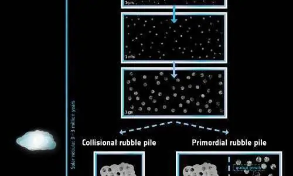

أخبار علمية ·
كيف تولد المذنبات؟
هل تنتج المذنبات عن اصطدام الأجرم الكبيرة نسبيًا؟ أم أنها تعود لعملية التشكل المبكرة للنظام الشمسي؟ يبين تحليل بيانات مركبة روزيتا أصل المذنبات وكيفية تشكلها. لنتابع هذا المقال لمعرفة المزيد: #روزيتا #المذنبات #النظام_الشمسي.
بين التحليل المفصل للبيانات التي جمعتها مركبة روزيتا (Rosetta) أن المذنبات هي البقايا الناجمة عن عملية التشكل المبكرة للنظام الشمسي، وليست أجزاء أكثر حداثة تنتج عن الاصطدامات اللاحقة بين الأجسام الأخرى الأكبر حجما. يعد فهم كيفية وزمان اتخاذ المذنبات مثل شيريموف- جيراسيمينكو 67P او (67P/Churyumov-Gerasimenko) لأشكالها أمرا ذا أهمية قصوى في تحديد الطريقة التي يمكن استخدامها بها لتفسير التشكيل المبكر للنظام الشمسي وتطوره. وفي هذا الصدد، نشرت دراسة جديدة تتمحور حول هذا السؤال في مجلة Astronomy & Astrophysics، وقد كانت بقيادة بيورن دافيدسون Björn Davidsson من مختبر الدفع النفاث في معهد كاليفورنيا للتكنولوجيا في باسادينا (الولايات المتحدة الامريكية). وفي حال كانت المذنبات أجساما بدائية، فإنها يمكن أن تساعد في الكشف عن خصائص السديم الشمسي الذي تكونت منه الشمس والكواكب والأجسام الصغيرة قبل 4.6 مليار سنة، هذا بالإضافة إلى العمليات التي حولت نظامنا الكوكبي إلى ما نراه عليه. تنص الفرضية البديلة على أن المذنبات عبارة عن أجزاء أكثر حداثة نتجت عن الاصطدامات بين الأجسام الأقدم مثل أجسام نبتون الجليدية والعابرة (TNOs). وبالتالي فإنها تلقي الضوء على التركيب الداخلي لمثل هذه الأجسام الأكبر، والاصطدامات التي حطمتها، والعملية التي يتم بها تشكيل أجسام جديدة من بقايا الأجسام الأقدم. يقول مات تايلور Matt Taylor، وهو عالم في مشروع روزيتا التابع لوكالة الفضاء الأوروبية: “في كلتا الحالتين، إن المذنبات هي الشاهد على أحداث تطور النظام الشمسي الهامة، ولهذا السبب قمنا بهذه القياسات المفصلة مع روزيتا –إلى جانب استكشافات لمذنبات أخرى- بهدف إيجاد السيناريو الأكثر احتمالا”. وخلال مكوثها لمدة عامين على سطح المذنب تشوريموف-جيراسيمينكو /67P، نقلت روزيتا صورة عن المذنب بوصفه جسما منخفض الكثافة وعالي المسامية وثنائي الفصوص مع طبقات ممتدة، مشيرة إلى أن الفصوص هي عبارة عن المواد المتراكمة بمرور الوقت قبل أن تندمج. تعطي المسامية العالية وغير الاعتيادية للب من الداخل المؤشر الأول على أن هذا النمو لا يمكنه الحصول عبر اصطدامات عنيفة، لأن ذلك سيضغط المواد الهشة. وتعطي الهياكل والمعالم التي رُصدت ضمن مجالات مختلفة من الأحجام من قبل كاميرات روزيتا المزيد من المعلومات عن كيفية حدوث هذا التطور.
ومن جهة أخرى، أظهرت الدراسات السابقة أن الرأس والجسم كانا بالأصل جسمين منفصلين، ولكن الاصطدامات التي قامت بدمجهما توجب أن تكون منخفضة السرعة كي لا تدمرهما. وتشير الحقيقة القائلة بوجود الطبقات ذاتها تقريبا في كلا الجسمين إلى أنهما لابد وخضعا للتاريخ التطوري نفسه، وتعني أيضا أن معدلات البقاء في مواجهة اصطدامات كارثية ينبغي أن تكون عالية لمدة طويلة من الزمن. ومن الممكن أن تكون حوادث الاندماج قد حدثت أيضا على نطاقات أصغر. فعلى سبيل المثال، تم تحديد ثلاث قمم كروية في المنطقة باستيت Bastet على فص مذنب صغير، والتفسير هو أنها نتائج لمذنبات أصغر لا تزال محفوظة جزئيا حتى اليوم. ونجد عند نطاقات أصغر بعرض بضعة أمتار فحسب، ما يسمى بمعالم (التجاعيد؛ أي أنها متموجة) و (التلال)، وإضافة إلى ذلك، تم رصد المعالم الوعرة في العديد من الحفر وجدران الجرف المكشوفة في مواقع مختلفة من المذنب. ومع وجود احتمال بأن يكون هذا التشكل قد نشأ من التفتت لوحده، يسري اعتقاد آخر بأنها في الواقع تمثل التكتلات الداخلية لمكونات المذنب، إذ يمكن لهذه الطيات أن تظهر الحجم النموذجي للمذنبات الأصغر التي تراكمت واندمجت لتشكل المذنب، وهي مرئية اليوم بسبب الحت الذي يسببه ضوء الشمس. ووفقا للنظرية، تتغير السرعات التي تصطدم بها المذنبات الأصغر وتندمج خلال عملية النمو، مما يؤدي إلى تشكل قمم عندما يبلغ حجم التكتلات عدة أمتار. ولهذا السبب يعتقد بأن المعالم التي يبلغ حجمها عدة أمتار هي الأكثر تراصا ومرونة، وهذا مثير للاهتمام بشكل خاص لاسيما وأن مواد المذنب تظهر بشكل عقدي متكتل خاصة عند هذا النطاق من الحجم. وتظهر خطوط أخرى من الدليل، وهي تتضمن تحليلَ طيفٍ لتركيب المذنب، والذي يبين أن السطح قد شهد القليل، أو لم يشهد أبدا تغييرات في المواقع بواسطة الماء السائل. وكذلك تتضمن عمليةَ تحليل للغازات المنبعثة من طبقات الجليد المتصاعدة والمدفونة عميقا تحت السطح، والتي أظهرت أن المذنب غني بالجسيمات شديدة التطاير مثل أول أكسيد الكربون والأكسجين والنتروجين والأرغون. وتدل هذه الأرصاد على أن المذنبات تشكلت في ظروف شديدة البرودة ولم تشهد عمليات حرارية كبيرة خلال الجزء الأكبر من فترة حياتها. وبدلا من ذلك، لا بد وأنها تراكمت ببطء خلال فترة زمنية طويلة، وهذا يفسر درجات الحرارة المنخفضة، وبقاء بعض الثلوج والاحتفاظ بالجسيمات شديدة التطاير. يقول بيورن: “في الوقت الذي تبدو فيه أجسام TNO الأكبر في المراكز الخارجية للنظام الشمسي كما لو أنها تسخن بواسطة المواد المشعة قصيرة الأجل، لا تظهر المذنبات علامات مماثلة على عمليات تسخين كهذه. وعلينا أن نحل هذا التناقض من خلال إلقاء نظرة على الخط الزمني لنماذج نظامنا الشمسي، والأخذ بعين الاعتبار أفكار جديدة”.

افترض بيورن وزملاؤه أن الأجسام الأكبر في تجمع TNO تشكلت بشكل سريع خلال المليون عام الأولى من عمر السديم الشمسي، وذلك بمساعدة التيارات الغازية المضطربة التي سارعت من نموها إلى أحجام تصل إلى 400 كم. ولفترة تقارب الثلاثة ملايين عام من تاريخ النظام الشمسي، اختفى الغاز من السديم الشمسي ليخلف المواد الصلبة فحسب. فيما بعد، وعلى مدار فترة أطول تقارب ال 400 مليون سنة، تراكمت بسبب أجسام TNO المزيد من المواد ببطء وخضعت للضغط إلى طبقات، وانصهرت ثلوجها وتجمدت من جديد، حتى أن بعض أجسام TNO نمت لتصل إلى حجم يقارب حجم أجسام بلوتو أو تريتون. وفي المقابل، سلكت المذنبات طريقا مختلفا، فبعد طور النمو الابتدائي السريع لجسيمات TNO، بدأت الأسطح المحببة (ذات النتوءات) و”حصى” المواد الثلجية في الجزء الخارجي البارد من السديم الشمسي بالتجمع بسرعة منخفضة مما أسفر عن مذنبات بقياس 5 كم تقريبا، في الوقت الذي اختفى فيه الغاز من السديم الشمسي. أدت السرعات المنخفضة التي تراكمت بها المواد إلى تشكيل أجسام ذات نوى هشة ومسامية عالية وكثافة منخفضة. وسمح هذا النمو البطيء للمذنبات بالاحتفاظ ببعض المواد القديمة شديدة التطاير من السديم الشمسي، إذ أنها كانت قادرة على إطلاق الطاقة المتولدة عن التحلل الإشعاعي بداخلها بدون أن ترتفع درجة حرارتها كثيرا. ولعبت أجسام TNO الأكبر حجما دورا أكبر في تطور المذنبات، بواسطة التأثير في مدارات المذنبات، مما أدى إلى اندماج مواد إضافية بسرعة أعلى تقريبا على مدار ال 25 مليون سنة اللاحقة، وشكلت بذلك الطبقات الخارجية للمذنبات. وقد سمح هذا التأثير لهذه الأجسام التي تبلغ أحجامها عدة كيلومترات بالاصطدام بلطف مع بعضها البعض، مما تسبب في تمتع بعض المذنبات بطبيعة ثنائية الفصوص. ويستخلص بيورن: “لا تظهر المذنبات وكأنها تبدي الخصائص المتوقعة لاصطدامات أكوام الأنقاض، التي تنتج عن سحق الأجسام الأكبر مثل أجسام TNO. عوضا عن ذلك نعتقد بأنها قد نمت في ظل أجسام TNO، لتنجو من الأذى جوهرياَ لمدة 4.6 مليار سنة”. ويضيف مات: “يفسر نموذجنا الجديد ما نراه في أرصاد روزيتا المفصلة عن مذنبها، وما تم التلميح إليه في البعثات السابقة التي حلقت إلى جانب المذنبات التي تعتبر الكنوز الدفينة الحقيقية للنظام الشمسي”. ويختتم حديثه بالقول: “تعطينا المذنبات فكرة لم يسبق لها مثيل حول العمليات التي كانت مهمة في ميدان تشكل الكواكب في تلك الأزمنة المبكرة، ومدى ارتباط ذلك ببنية النظام الشمس الذي نراه اليوم”.
المصدر: ناسا بالعربي
منشور منقول من أرشيف موقع الاتحاد كما نُشر، مع تنظيف التنسيق.